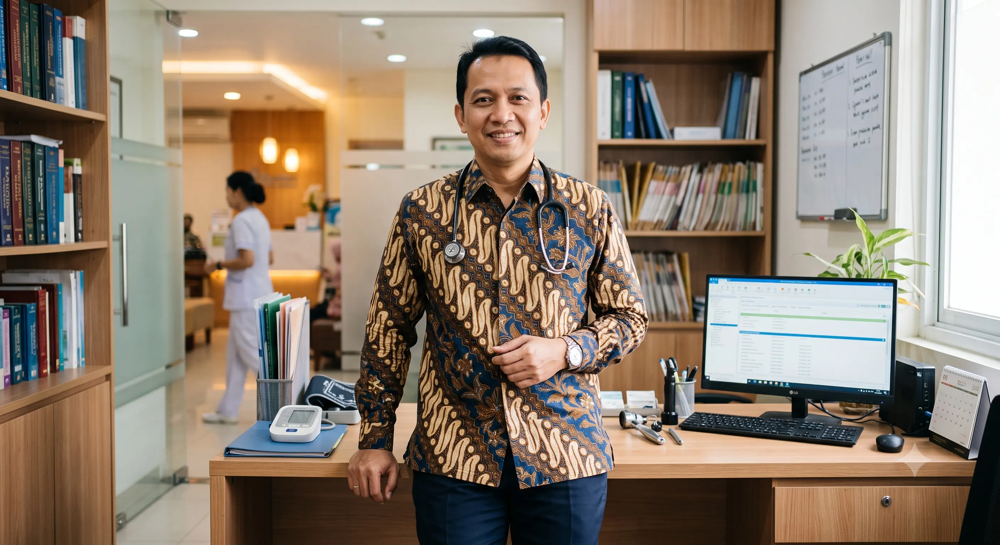

Jejak Prestasi Alumni
Kisah sukses mereka yang telah lahir dari rahim Universitas Airlangga.
"Pendidikan di UNAIR tidak hanya membekali saya dengan ilmu pengetahuan medis, tetapi juga empati dan etika pengabdian kepada masyarakat yang sangat berguna dalam karir profesional saya."

Dr. Budi Santoso
Alumni FK, Direktur RS
"Jejaring dan pengalaman berorganisasi selama kuliah di FEB UNAIR membentuk mental kepemimpinan saya untuk siap bersaing di kancah industri multinasional."

Siti Aminah
Alumni FEB, CEO Tech Startup